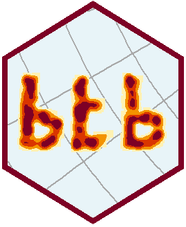

Changelog
Source:NEWS.md
btb 0.2.0
CRAN release: 2022-10-24
- Change of maintainer, new authors (november 2022)
- Change
dfToGridname (tobtb_ptsToGrid) - Allow
btb_ptsToGridto use simple feature points as input - Change
kernelSmoothingname (tobtb_smooth) - Allow
btb_ptsToGridto use simple feature points as input - New function to link points to their centroid in a grid (
btb_add_centroides) - Updates messages when smoothing removed (in RcppLissage.cpp)
- Old functions
dfToGridandkernelSmoothingreplaced by warnings - Possibility to use Inspire naming for grid cells (with
btb_add_inspirefunction) - Roxygen documentation
- testthat compatible tests
- New tests
- Add vignette
- Add pkgdown website
btb 0.1.19
- improvement: ckecking if NA exists in coordinates and variables with a loops (faster than anyNA)
- improvement: two matrix suppressed in parameters sended to rcppLissage
- new function : constituerGrappes
- new function : constituerMatriceEffectifs
btb 0.1.17
- improvement: kernelSmoothing with quantiles splits computation in parallel clusters (with RcppParallel)
btb 0.1.15
- improvement: verbose output to console only if fUpdateProgress is not provided. (if provided, the output must be managed by the calling function)
- improvement: use of left-value [, “var”] instead of $var
btb 0.1.13
- bug fixed: upper boundary of loop for was underestimated when bandwidth > neighbor o cellSize
- bug fixed: the offset was wrong when dfCendroids was provided
- improving window when looking for cells to send smoothed value
- new argument for kernelSmoothing and smoothingToGrid: fUpdateProgress
- neighbor argument is 0 if dfCendroids is provided
- adding this NEWS file
- adding unit tests
- encoding in UTF-8 (description file)
btb 0.1.2
CRAN release: 2016-10-26
- bug fixed: manage missing values
- bug fixed: doubles comparison
- rename bandwith in bandwidth
- improved documentation
- improved memory improved (double to int when possible)
- kernelSmoothing accept a new argument: dfCentroids
- new smoothing mode: mobile quantile
- log when na value is found
- check if bandwidth > sqrt(cellSize) / 2
- check if x and y are not null
- encoding source files in UTF-8